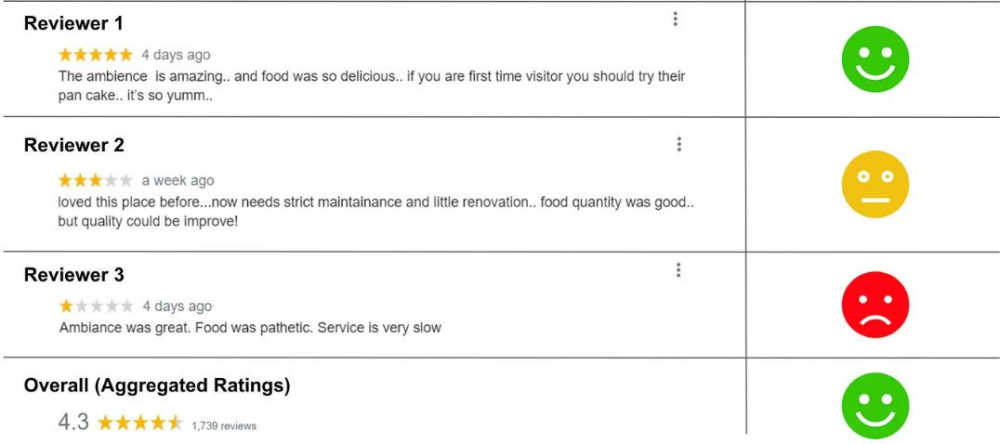
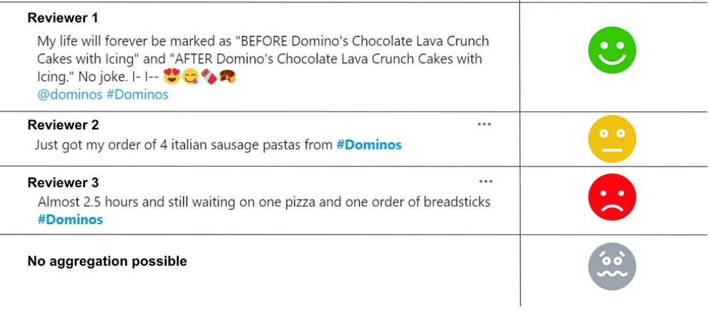
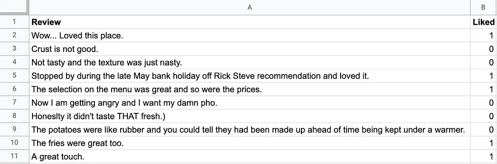
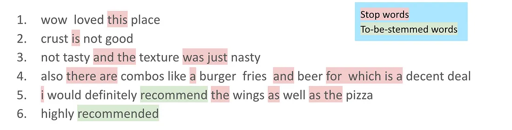
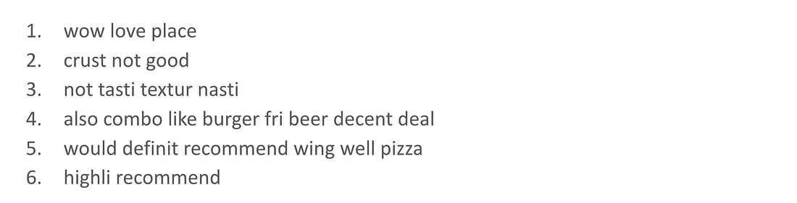
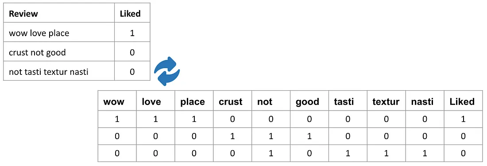
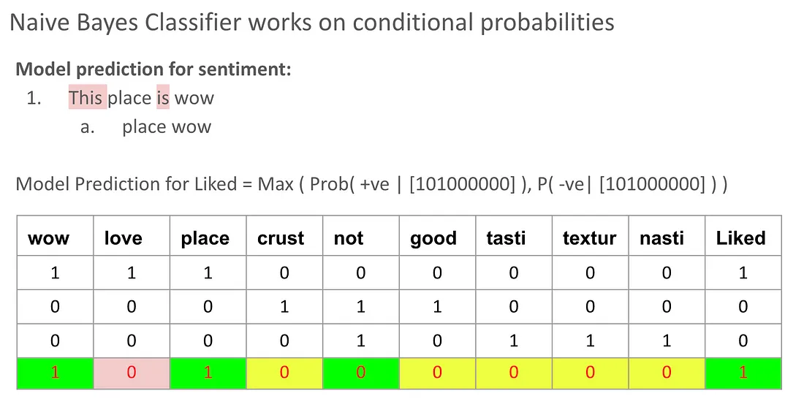

Introduction
The majority of aspects such as business, politics, medication and others, requires data to be examined to bring various advantages. The data that are collected often to be raw data that still contains complex and high-dimensional information. This kind of data may not be suitable for analysis or even modeling. It needs to be dimensionally reduced and focus more on the informative features. By that, a sub domain of artificial intelligence is then made.
Feature learning refers to the process of detecting relevant features from raw data and extracting it without manual specifications. It aims to capture patterns, structures or even relations in the data. With effective representations, feature learning algorithms can transform a high dimensional raw data into more informative and simple one. Depending on the specific requirements, different types of feature learning techniques such as supervised learning, unsupervised learning and self supervised learning can be utilized.
This paper primarily focused on the topic of sentiment analysis. It aims to explore various approaches and techniques that are used in sentiment analysis. This includes natural language processing (NLP) methods and machine learning models.
Related Works
Sentiment analysis is a process that automatically detects emotions and opinions by classifying a given digital text whether it's positive, negative or neutral. The integration of two AI subfields such as natural language processing (NLP) and machine learning are combined to extract insights from customer feedback. NLP itself transforms human language to machine language and has two different techniques such as syntactic techniques to understand the structure of a text and semantic techniques to identify the meaning of the text. It then passes the information to machine learning where they find patterns and predictions.
One of the most straightforward ways of doing sentiment analysis is by using a lexicon-based method. This method entails creating a dictionary (lexicon), either manually or automatically, to assign and calculate for each word or phrase a positive, negative, or neutral sentiment. To classify the particular sentiment of a given word or phrase, one possible method is by using a semantic orientation (SO). According to Taboada et al. (2011), semantic orientation measures the “evaluative factor (positive or negative) and potency or strength (degree to which the word, phrase, sentence, or document in question is positive or negative).” First, a compiled list of adjectives, words, and phrases and their corresponding SO value will be combined into a dictionary. Then, a given block of text will have its SO score calculated by extracting and annotating all adjectives with their SO value as given in the dictionary. This score will then be aggregated into a single score for the entire text. As mentioned before, the lexicon-based sentiment analysis is one of the most straightforward methods, since it’s less expensive because this method does not require highly advanced sentiment analysis algorithms. Moreover, resources such as SentiWordNet are publicly available, making them easily accessible. This also removes the need of training data, as the tags are already determined manually. However, when the given sentence is sarcastic, has negation, grammar mistakes, misspellings, or irony, this method may be inaccurate leaving it unsuitable for domains like social media.
Using machine learning algorithms that categorize sentiment on the basis of statistical models is another way of analyzing sentiment. Generally, these methods employ vector spaces which are generated by transforming any given sentence into a resource which can be worked on by ML algorithms. Unlike the dictionary-based approach, ML methods can be trained to detect sarcasm, irony, or negation, giving a more accurate result. The tradeoff however, comes in training the algorithm, as it takes a large amount of computing power to do so. An example of a statistical model which can be used is word embedding (word2vec). This embedding method has a property where words which are similar are close to each other in vector space, while rarely combined words would be far apart.
Both of these methods could also be combined into one hybrid approach, which uses lexicon and statistical models to gain the benefits of both methods. The results are then gathered to conclude the final prediction. It integrates multiple datasets from different sources that enhance the diversity of information. This approach also has a flexible characteristic, where it can be assigned to different types of subtasks. It can focus on a problem or even collaborate to provide solutions. By combining multiple methods, this approach can be more tough with noises and complex datasets. Sometimes simple data can be overlearned by a machine and it triggers overfitting to happen. However, applying this approach can prevent such situations from happening.
Description
"Your most unhappy customers are your greatest source of learning" - Bill Gates
In the information age, businesses get a large amount of customer feedback from their websites, social media pages, business listings, and so on. However, most businesses don’t even know how to utilize this information to improve themselves. Even the ones that do know, mostly focus on structured feedback like customer reviews that have an explicit rating out of 5 which clearly indicates the general sentiment of the person that posted the review.

The interesting part though, is that unstructured feedback, ie. feedback without any explicit ratings given by the author, are where most of the volume lies. Most of the world uses social media outlets such as Twitter to express their feelings about almost anything one could think of.

In the example above, one has to manually read each and every review to understand the sentiment of the person posting it which makes aggregating sentiments about a particular product even more difficult. This is where sentiment analysis using Machine Learning and Natural Language processing comes into the picture.
But How?
Assume a restaurant client at XYZ Restaurant provides historic data on customer reviews which have been previously labeled with positive/negative values. In addition to this, the client would also share a fresh customer review dump which needs classification as either negative or positive. To achieve this we make a binary review classification model using the historic customer review data to train our model for running predictions on the unseen data. The figure below shows an example of what the first few entries in the dataset would look like.

1. Preprocessing
Data preprocessing is the first step that we carry out before we can proceed any further, and this is usually done by removing non-value adding characters from the reviews. The first review in the sample dataset has dots and commas which are special characters, and gives us no information about whether a review is good or bad. The same thing can be said about numbers in the reviews as well, so these can be dropped from the data.

2. Remove Unnecessary Details
The next thing we have to do is to remove stop words which are shown highlighted in red in the figure above. These are generally non-value adding as they don’t help us in understanding the sentiment behind a statement in any way. Conversely, the words highlighted in green are words that need to be stemmed to their root words. In this instance, the word recommend is used in different forms but the sentiment that both of these forms convey is nearly similar. We convert these words back to their root word which is ‘recommend’; a process called stemming.

3. Conversion
In order to facilitate comprehension by computers, the textual data in our reviews needs to be converted into numerical form. We employ a bag-of-words representation after the data has undergone the necessary cleaning processes. Considering the initial six reviews, the first three are selected in the figure below for a closer look at the bag-of-words concept. After the cleaning phase, our dataset takes the form illustrated above. When transitioning to a bag-of-words representation, the system identifies unique words, or tokens, within the review column and creates distinct columns for each token.
The outcome is as follows:

In this representation, a 1 is assigned if a token is present in the review, and a 0 if it is not. The term "bag-of-words" is aptly used because this approach discards information related to the order and sequence of words. During the model-building phase, certain tokens that infrequently appear in reviews are omitted, thereby reducing sparsity.
4. Classifying
The selected classifier for our sentiment analysis model is the Naive Bayes classifier. A brief understanding of its functioning is crucial. Utilizing the bag-of-words representation established earlier, let's delve into the logic used to create the Naive Bayes Classifier that we use for our sentiment analysis.
Consider a new customer review proclaiming "This place is wow," and the task is to predict its sentiment. Post data cleaning, this review simplifies to having two tokens: "place" and "wow". In the bag-of-words representation, the review is depicted as follows, with 1s denoting the presence of the tokens "WOW" and "PLACE" and zeros for other tokens in the model dictionary:

The Naive Bayes Classifier relies on conditional probabilities. Examining historical reviews, if the token "WOW" is present, the sentiment is consistently positive based on the available training data. Conversely, if the token "LOVE" is absent, the sentiment is consistently negative. A similar analysis is performed for the token "PLACE." However, for the token "CRUST," the sentiment is both positive and negative when the token is absent, resulting in a 50:50 probability. More data is needed to determine whether "CRUST" as a token contributes to positive or negative sentiment.
This process is repeated for all tokens, assessing respective conditional probabilities. With the limited information available, it becomes evident that three tokens indicate positive sentiment, while only one suggests negative sentiment. Consequently, the review is classified as positive by the Naive Bayes Classifier.
Evaluation
The approach discussed leverages a systematic and well-structured methodology for sentiment analysis, combining data preprocessing, bag-of-words representation, and the application of the Naive Bayes classifier. The integration of machine learning and natural language processing techniques is used to transform unstructured customer feedback into numerical format datasets for meaningful analysis by the model. The choice of focusing on unstructured data, such as social media sentiments, highlights the significant volume and untapped potential of this data.
Three evaluation methods are used in determining the effectiveness of this approach based on the confusion matrix output, which are True Positive (TP), True Negative (TN), False Positive (FP), and False Negative (FN).
- Precision (P) = TP/(TP + FP)
- Recall (R) = TP(/TP + FN)
- Accuracy (A) = (TP + TN)/(TP + TN + FP + FN)
After training the model with a dataset of 900 points and running it on a test set of 100 unseen data points, we are able to evaluate the results of the model using the confusion matrix to get the respected Precision, Recall, and Accuracy.
| True Class | ||||
|---|---|---|---|---|
| Positive | Negative | |||
| Predicted Class | Positive | 67 | 11 | |
| Negative | 38 | 64 | ||
After evaluating the confusion matrix above, the value of this method’s precision, recall, and accuracy are 0.859, 0.638, and 0.728 respectively.
Conclusion
This paper tested a bag-of-words approach in sentiment analysis, specifically in the domain of unannotated customer reviews. This method requires the dataset to be preprocessed by removing stop words which have no significance towards the meaning of the sentence and stemming words back into their root words. After removing these unnecessary details, the textual data is then converted into numerical form in a bag-of-words representation, where a 1 is assigned if a token (word) is present in the review and a 0 if not. The model then uses a Naive Bayes Classifier to predict the sentiment of a sentence given its bag-of-words representation. This model is trained on a visible dataset of 900 points and a test set of 100 data points. Using the metrics of Precision, Recall, and Accuracy, the model obtained results of 0.859, 0.638, and 0.728 respectively.